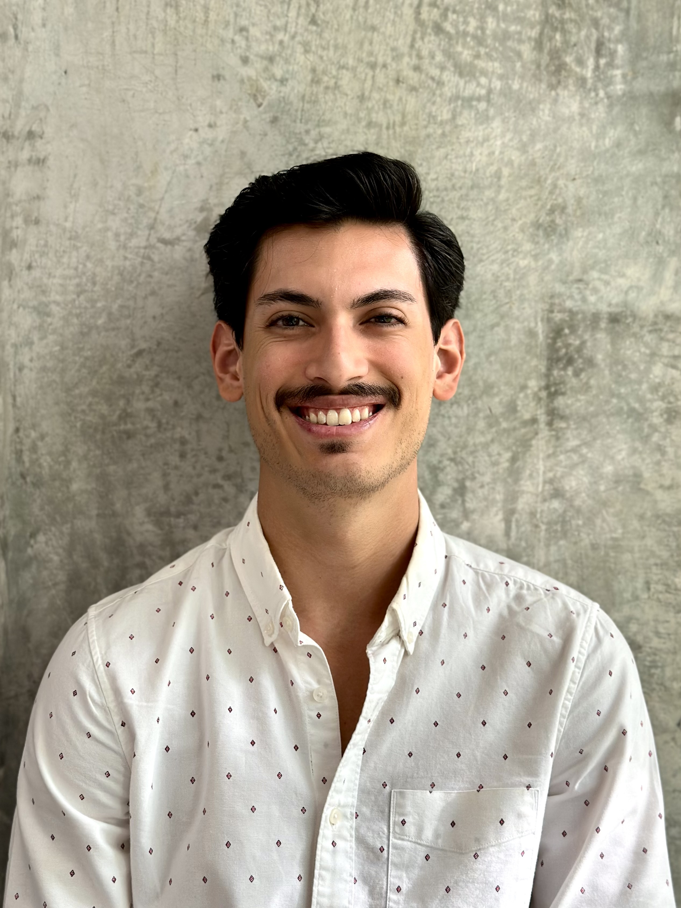

Luis Carlos Aranda Ramos

Summary
Professional training as a designer (focused on graphic, UX/UI and web design) and as a computer systems engineer.
Dedicated, attentive and with leadership skills. Great ability to identify areas of opportunity and offer creative solutions.
Interested in developing as a professional in technologycompanies in areas ofdesign and user experience.
As well as continuing to getinvolved in innovative techprojects.Responsible, willing to learn new things and learn from others.
Passionate about nature and sports.
Education
University
- Instituto Tecnológico de Estudios Superiores de Occidente
- Computer Systems Engineering (August 2016 - December 2019)
- Bachelor's degree in Design (August 2020 - December 2024)
Work Experience
- Web design
- Foro Gama | 2024
Branding and website design for a filming forum in Guadalajara, Jalisco.
- Graphic Design
- UNKNOWN Brand Studio | 2024
Content design for social media. Image and video editing.
- ITESO | Professional Application Project | Spring 2024
Responsive user interface and experience design for the “Corae: aging at home platform” using user-centered design and design thinking.
- ITESO | Professional Application Project | Autumn 2023
Redesign of the “Divina Patrona” mezcal cream brand. Creation of brandbook, logo, label, marketing strategies, etc.
- ITESO | AUSJAL | Autumn 2023
Intern in the area of communication and design at AUSJAL. Creation of digital and printed institutional communication.
- ITESO | Strategic Design | Summer 2023
Participation in an ethical and social design project for the “Mujeres del Fuego” collective in Comala, Colima.
Design contribution in the graphic communication department.
- ITESO | Center for Physical Education and Comprehensive Health | 2022
Intern in the area of sports communication for image production, image editing, transmission of sporting events,
creation of content on social networks and website management.
- POSH Piercing Bar | 2021
Graphic design assistant for content creation on social media and website management.
- Product design
- HERLINDA | 2022
Design, 3D modeling and production of a high vacuum packaging prototype for the HERLINDA startup, from the MATI collective.
- Textile design
- Mio Mio | 2020
Design assistant in the sublimation and fabric cutting area.
- Project management
- Daros Collection | 2019
Optimization project leader in process analysis and design.
Skills
- Project management
- Branding
- Problem solving
- Efficient in team and individual work
- Ease of handling computational tools
- Critical thinking
- Fast learning
- Organization
- Adaptability
- Web developmet
- Adobe Illustrator 100%
- Adobe Photoshop 90%
- Adobe InDesign 60%
- Adobe Lightroom 60%
- Adobe Xd 60%
- SolidWorks 60%
Languages
Awards and Certifications
- Athlete from the ITESO Men's Indoor Volleyball team
- 2nd place LIGA ITESO Autumn 2021
- 4th place 2022 CONADEIP National Championship
- 1st place LIGA ITESO Spring 2023
- 1st place INTERSUJ PUEBLA 2022
- 1st place INTERSUJ BOGOTÁ 2023
- 3rd place Liga ITESO Autumn 2023
- 3rd place 2024 CONADEIP National Championship
- 4th place Liga ITESO Spring 2024
Interests
Contact information